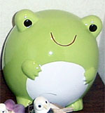
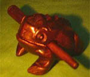
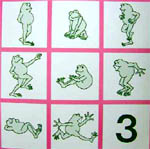
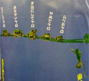

カエル貯金箱が破損！ 【福岡発=のり坊同志記者】実は、わが家で大事にしていたかえるちゃんが、きのう目覚めたら、不慮の事故で割れてしまっていたのです。すごくかなしくて、いろんなホームページで探しましたが、載っていません。発売元（㈱センバドー）にも連絡を入れましたが、廃盤になり作っていないそうです。販売されていたときは、『でかバンク（小）カエル』でお店に並んでいました。元気だった頃の写真を付けて送ります。心当たりはありませんか？いま、かえるちゃんは、修復中です。。。 粉々になってしまっている部分があり、パテなどで埋めて直してます。とても痛々しくて、見ていると辛いです。かえるちゃんも傷ついて一人では辛いと思い同じかえるちゃんのお友達を作りたいと思っています。 どうか、良い情報が聞けますよう、お待ちしてます。よろしくおねがいします。
でかバンクカエルを捜そう！【全国かえる奉賛会】大王も見たことがあるぞ。でも、どこでだったか思い出せない！全国のかえるショップの経営者諸君、店の在庫品をもういっぺん確認してくれー。カエル作者が入院中！【福岡発げこげこ大王直筆】大王が一目惚れしたこのカエル。作者の田口ラメ夫さんは、病気で入院しているらしいぞー。カエラー諸君！病気がケロっと治るように、田口さんに激励のメールを送ろう！
福岡でカエルサボテン展を開催！【福岡発カエルサボテン同志記者】ポストカードアート展を開きます。ここには、カエルサボテン新作ポストカードとカエルサボテンを販売します。カエルサボテンは、期間中売り切れなしの随時販売！！今まで、売り切れで買えなかった方、是非お立ち寄り下さい！トラとカエルが見つめあう！【韓国発ケグリ同志記者】大韓航空の機内誌Morning Calm９月号を見てたらカエルを発見しました．膝の上においてデジカメで撮影したのでちょっと歪んでますがお許しください。これはTOYOTA WORLD OF WILDLIFEという自然ドキュメンタリーフィルムで、機内で映しているものです．写真上部の韓国語は「トヨタ自然ドキュメンタリー－保護色」と書いてます。保護色をテーマにした番組なのでしょう。するとこのオレンジ色のカエルは色を変えるのかもしれません．
たたけば御利益カエル木魚！ 【鹿児島発にゃたろう様】鹿児島のインド産物店で見つけました鹿児島はなぜかアジア物産店がいくつもありました。カメラを持っていっていなかったので買って来ました。お持ちでなかったら、ミュージアムに寄贈いたします。コロコロと鳴き声の出る木彫りの蛙です
【全国かえる奉賛会】こ、こ、これはあ。福岡カエル展３会場で、小浜かえり姫が秘蔵していた、カエル木魚ではありませんか。背中の部分に撥を転がすと、音がするのです。
 塾の英語教材がカエル化！【韓国発ケグリ同志記者】そういえば私の勤める塾で使ってる英語教材の中にカエルが出てくるものがあるのです。ごらんのとおり表紙にカエルがいっぱい出てくるのですが，英語の先生によれば，このカエルにはＴｅｄという名前がついており，本文中でもたびたび登場し、海辺で人間の女の子と遊んだりするらしいです。ゲレンデをカエルウエアーで滑ろう！【日本発きーちゃん同志記者】来るべき冬に備えて、ゲレンデでもカエルと一緒に遊んでいる気分になれるウェアーを発見しました。全面に様々なカエルさんがプリントされたもので、色も全７色、ウェアだけでなく、グローブや帽子、リュックなどの、シリーズになっているみたいです。「ラカラーラ」という会社が発売元で、「OPITANO(オピタノ)」というブランドのラインです。写真は「ラカラーラ」のホームページでご覧になる事ができます。
 地下鉄にカエルポスター！【韓国発ケグリ同志記者】ソウルから戻ってきました．家に帰る途中、営団地下鉄大手町駅でカエルのポスターを見つけましたので大急ぎでデジカメで撮影してきました．なんとリアルなカエルが６匹も出演しています。この写真で左側に来ている電車に乗らねばならなかったので急いでおりましたが，いま思えば１匹ずつ接写すればよかったと悔やんでおります。
【全国かえる奉賛会】おおーっ。ケグリさん。このカエルは、『乗せてケローっ！！』と、駆け込み乗車をしようとするカエルを、ほかのカエルたちが『あぶないでケロ』『無理でケロ』『次にしてケロ』などと諌めているポスターだったあああ。急いでいたケグリ同志は、『乗せてケローっ！！』状態だったのかな！
投稿採用者に武功カエル徽章を授与！ |
||||||||||||||||||||||||||||||
かえる古新聞過去に取り上げた記事を見出し付きで一覧したい人は、ここをクリック◆創刊号を見る◆先週号を見る◆話題の号を見る◆かえる新聞の昔を読む◆COOL NET FROG RANKING !
|
私も入っています。。全国かえる奉賛会
大王様に会うには、このバナーをクリック。ずっと奥に写真館があるぞ。全国かえる奉賛会に入会するには、自分のホームページのどこかに、下の部分を追加するとバナーがリンク付きで表示されるぞ。どんどん入会しましょー |


|